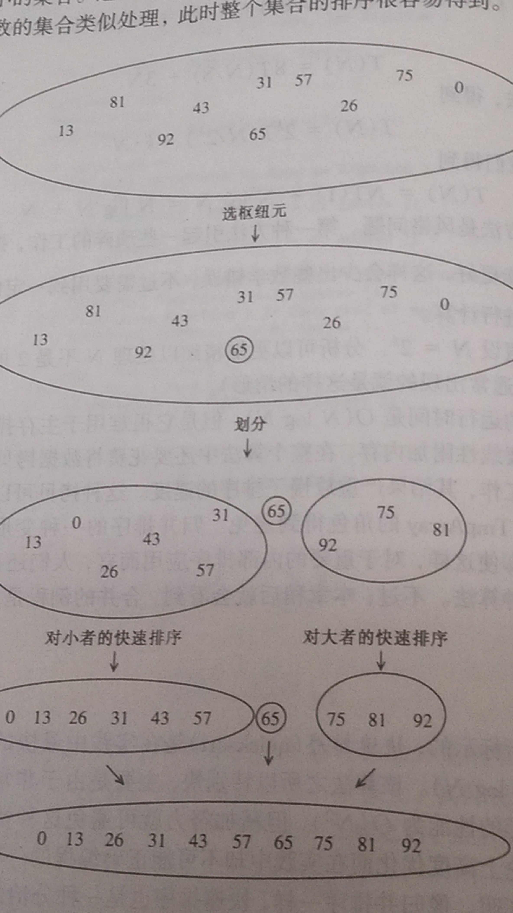

from 《数据结构与算法分析——c语言描述》
快速排序（quicksort）是实践中最快的已知排序算法。之所以快，是因为非常精炼和高度优化的内部循环。快速排序是一种分治的递归算法。
将数组S排序的基本算法由下列四步组成：
下图为一个示例，其中65为随机选取的枢纽元。 
快排更快的原因，在于第3步分割成两组实际上是在适当的位置进行并且非常有效，它的高效弥补了大小不等的递归调用的缺憾而且还有超出。
一种错误的方法：选取第一个元素。如果输入是预排序或者是反序的，花费时间将是O(n2)。另一种选取前两个互易的较大者作为枢纽元的想法，和选取第一个具有相同的错误。
一种安全的做法：随机选取。一方面随机数生成器可能有问题，另一方面随机数生成昂贵的。
三数中值分割法（Median-of-Three Partitioning）：左端、右端和中心位置的三个元素的中值作为枢纽元。*使用三数中值分割法减少了快速排序大约5%的运行时间。